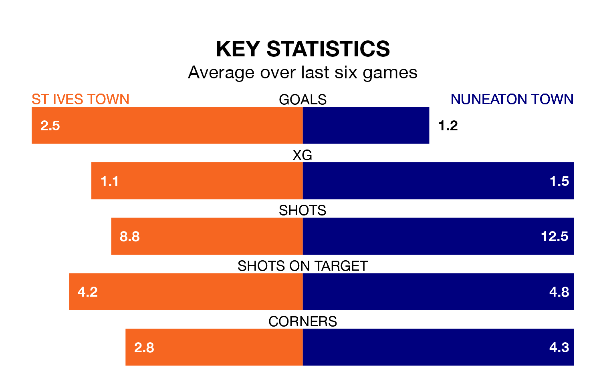

Nuneaton Town travel looking to secure a first win in six Southern League Premier Central games against St Ives Town on Saturday.
The Boro have lost two and drawn three matches since they last earned three points – against Kettering Town on November 28.
They face a St Ives side who have won just two and lost three over that time.
With 45 goals in 25 games so far this season, St Ives are scoring more than average in the league with 1.8 goals per game. But they are conceding more than average too, letting in 41 goals at a rate of 1.6 per game.
Nuneaton, meanwhile, are below average scorers, with 1.4 goals per game, compared to a league average of 1.5. They have conceded 1.6 goals per game.
St Ives Town are 14th in the table after 25 games, of which they have won nine and drawn three, earning 30 points.
Nuneaton Town are two places ahead of the home side in 12th, with 10 wins and four draws putting them on 34 points.
In the last three years, St Ives and Nuneaton have played each other on five occasions. St Ives won three of them and Nuneaton two.
On average, St Ives scored 1.4 goals and the Boro 1.6 in those matches.
Their last meeting was on August 12, when St Ives won 1-0 away.
St Ives's last match was on January 6, a 5-0 win against Leiston.
Nuneaton drew 2-2 with Hitchin Town last time out, on January 5.
Updated: 10:50, 10/01/24